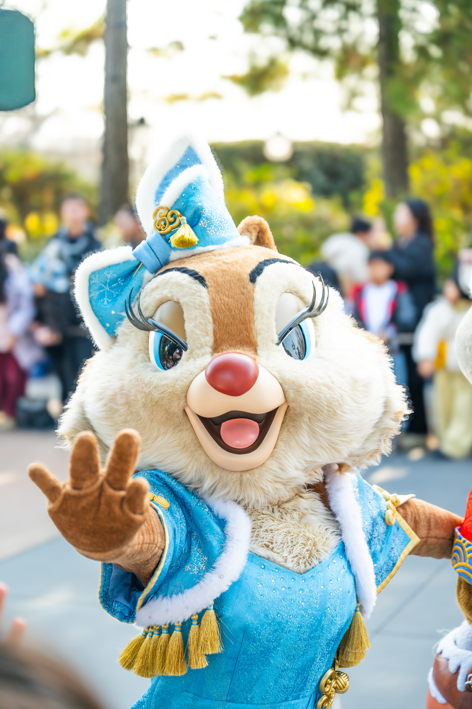

Yu
ハッピーオタクライフ
Disneyが大好きなYuのオタクライフを詰め込んだページです。不定期更新中。
同じ好きを通してたくさんのシェアハピを目指してます。
📍 Pin Trading & Collector
🏰 Past AP : TDR HKDL DLP
✨ Now AP : SHDL Diamond
note
言語化してる
Filmarks
映画レビュー
はてなブログ
Yuのこれって何？
Twitter
つぶやき
Instagram
写真
YouTube
動画